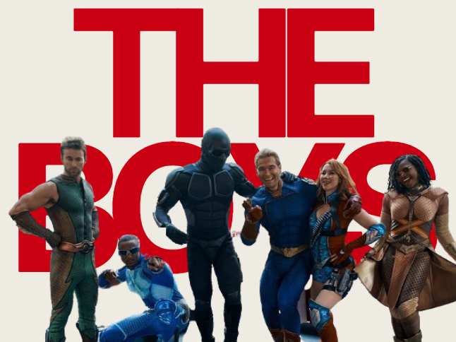
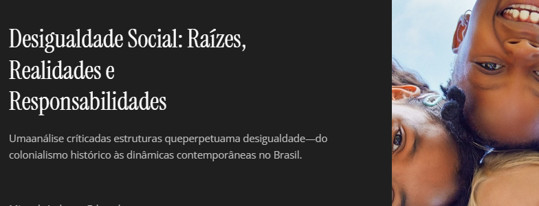

1º Trimestre
Trabalho – Geopolítica da Rússia

Descrição: Trabalho desenvolvido sobre a geopolítica da Rússia, analisando aspectos históricos, territoriais, econômicos e sociais, além de sua influência no cenário mundial e nas relações internacionais.
Habilidades desenvolvidas:
- C1: Compreender processos históricos, sociais e geográficos da sociedade.
- H1: Analisar a formação do indivíduo na sociedade.
- H2: Compreender os processos de socialização.
- H3: Analisar relações de poder.
- H4: Identificar mudanças e permanências ao longo do tempo.
- H5: Analisar aspectos políticos, econômicos e sociais.
Jornal Histórico
.png)
Descrição: Criação de um jornal histórico com o objetivo de apresentar acontecimentos e análises sociais utilizando conceitos históricos, científicos e políticos para compreender diferentes contextos da sociedade.
Habilidades desenvolvidas:
- C3: Analisar intervenções sociais e seus impactos.
- H15: Avaliar propostas e soluções para problemas sociais.
- H16: Compreender dinâmicas sociais e culturais.
- H20: Interpretar contextos históricos e sociais.
- C6: Aplicar conhecimentos para análise crítica da realidade.
- H39: Utilizar raciocínio lógico na interpretação de fenômenos sociais.
2º Trimestre
Autoritarismo

Descrição: Trabalho sobre AUTORITARISMO em midias, sendo usada como referencia: The Boys
H10 – Compreender as transformações no mundo do trabalho, geradas por mudanças na ordem econômica. H22 – Analisar, na perspectiva humana e social, as principais características e dinâmicas dos fluxos da sociedade. H26 – Comparar pontos de vista e ações práticas do indivíduo ou grupo social em diferentes contextos. H27 – Analisar hipóteses e questões ambientais, sociais, econômicas, políticas e culturais, a partir de leituras e debates.
Desigualdades sociais

Descrição: Slides sobre a desigualdade social e COLONIALISMO
H30 – Analisar as lutas sociais e conquistas obtidas no que se refere às mudanças nas legislações ou nas políticas públicas. H39 – Relacionar o papel das instituições sociais às soluções para problemas políticos, econômicos, sociais e ambientais no contexto da sociedade brasileira e do mundo. H40 – Analisar o processo de formação das instituições sociais e políticas, compreendendo seu papel na sociedade.